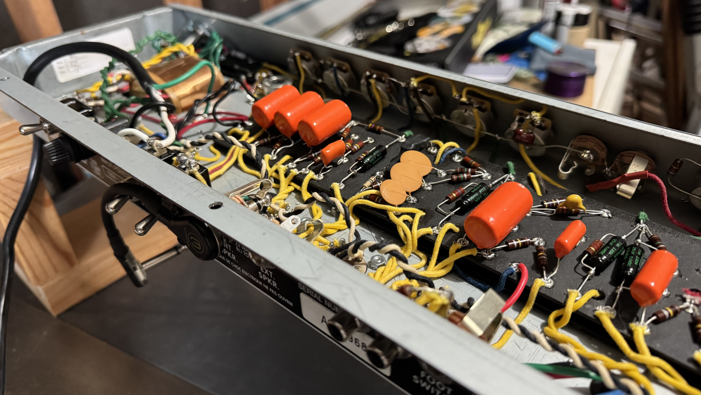

Tube Amp & Analog Synth Repair & Restoration
I repair, service, and restore vintage tube amplifiers, analog synthesizers, and discrete studio gear. All work is done to original schematic standards using proper engineering practices.

Scope of Work
- Tube Amplifiers: Diagnostics, retubing and rebiasing, power supply recapping, speakers, 3-prong grounding, voicing, and custom mods (PPIMV, tone stacks). Servicing Fender, Marshall, Vox, Ampeg, Hiwatt, Sunn, Magnatone, and similar platforms.
- Synthesizers & Keys: Power supply rebuilds, voice calibration, VCO/VCF tracking, contact overhauls, and recaps for Moog, ARP, Roland, Sequential Circuits, Oberheim, Rhodes, Wurlitzer, etc..
- Outboard & Guitars: Discrete preamps, compressors, channel strips, and outboard fx. Guitar work is strictly limited to electronics: pickups, pots, switches, wiring, and shielding.
- Special Projects: Considered on case-by-case basis. Amp kit or custom builds, Eurorack builds, major amp/instrument restoration. Email to discuss.
What I Do Not Service
Modern surface-mount (SMD) gear, digital modeling units, modern solid-state amps, consumer AV receivers, or guitar woodwork/fretwork.
Parts, Rates & Turnaround
- Bench Fee: $100 non-refundable diagnostic deposit, applied toward total labor if approved.
- Labor: $100 per hour plus parts.
- Components: High-reliability modern components (F&T, Nichicon, Sprague, CTS, Switchcraft) are installed by default. I do New Old Stock (NOS) components / vintage-correct cloth-covered wire by request only; parts costs and lead times will reflect sourcing difficulty and market availability.
- Turnaround: Timelines depend strictly on current backlog and parts.
CURRENTLY ACCEPTING NEW WORK
Drop-offs are by appointment only.
Email kevin@krausemusic.com with the make, model, and a specific description of the issue or project to schedule bench time.